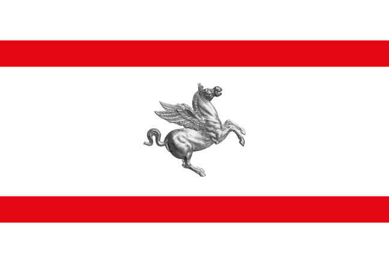

TemporadaSeasonSaison 2020
Tiempos por vuelta, ranking de vueltas y diferencias por vuelta, con la diferencia en tiempo absoluto respecto al líder de la carrera.Lap times, lap rankings and gap charts with absolute time gap to the race leader.Temps au tour, classement des tours et écarts au tour, avec l'écart en temps absolu par rapport au leader de la course.
RondaRoundManche 1 ·  Gran Premio de AustriaAustrian Grand PrixGrand Prix d'Autriche
Gran Premio de AustriaAustrian Grand PrixGrand Prix d'Autriche
2020-07-05 · 71 vueltaslapstours
RondaRoundManche 2 · Gran Premio de EstiriaStyrian Grand PrixGrand Prix de Styrie
2020-07-12 · 71 vueltaslapstours
RondaRoundManche 3 ·  Gran Premio de HungríaHungarian Grand PrixGrand Prix de Hongrie
Gran Premio de HungríaHungarian Grand PrixGrand Prix de Hongrie
2020-07-19 · 70 vueltaslapstours
RondaRoundManche 4 ·  Gran Premio de Gran BretañaBritish Grand PrixGrand Prix de Grande-Bretagne
Gran Premio de Gran BretañaBritish Grand PrixGrand Prix de Grande-Bretagne
2020-08-02 · 52 vueltaslapstours
RondaRoundManche 5 · Gran Premio del 70º Aniversario70th Anniversary Grand PrixGrand Prix du 70e anniversaire
2020-08-09 · 52 vueltaslapstours
RondaRoundManche 6 ·  Gran Premio de EspañaSpanish Grand PrixGrand Prix d'Espagne
Gran Premio de EspañaSpanish Grand PrixGrand Prix d'Espagne
2020-08-16 · 66 vueltaslapstours
RondaRoundManche 7 ·  Gran Premio de BélgicaBelgian Grand PrixGrand Prix de Belgique
Gran Premio de BélgicaBelgian Grand PrixGrand Prix de Belgique
2020-08-30 · 44 vueltaslapstours
RondaRoundManche 8 ·  Gran Premio de ItaliaItalian Grand PrixGrand Prix d'Italie
Gran Premio de ItaliaItalian Grand PrixGrand Prix d'Italie
2020-09-06 · 53 vueltaslapstours
RondaRoundManche 9 ·

Gran Premio de la ToscanaTuscan Grand PrixGrand Prix de Toscane2020-09-13 · 59 vueltaslapstours
RondaRoundManche 10 ·  Gran Premio de RusiaRussian Grand PrixGrand Prix de Russie
Gran Premio de RusiaRussian Grand PrixGrand Prix de Russie
2020-09-27 · 53 vueltaslapstours
RondaRoundManche 11 ·  Gran Premio de EifelEifel Grand PrixGrand Prix de l'Eifel
Gran Premio de EifelEifel Grand PrixGrand Prix de l'Eifel
2020-10-11 · 60 vueltaslapstours
RondaRoundManche 12 ·  Gran Premio de PortugalPortuguese Grand PrixGrand Prix du Portugal
Gran Premio de PortugalPortuguese Grand PrixGrand Prix du Portugal
2020-10-25 · 66 vueltaslapstours
RondaRoundManche 13 · Gran Premio de Emilia-RomañaEmilia Romagna Grand PrixGrand Prix d'Émilie-Romagne
2020-11-01 · 63 vueltaslapstours
RondaRoundManche 14 ·  Gran Premio de TurquíaTurkish Grand PrixGrand Prix de Turquie
Gran Premio de TurquíaTurkish Grand PrixGrand Prix de Turquie
2020-11-15 · 58 vueltaslapstours
RondaRoundManche 15 ·  Gran Premio de BaréinBahrain Grand PrixGrand Prix de Bahreïn
Gran Premio de BaréinBahrain Grand PrixGrand Prix de Bahreïn
2020-11-29 · 57 vueltaslapstours
RondaRoundManche 16 ·  Gran Premio de SakhirSakhir Grand PrixGrand Prix de Sakhir
Gran Premio de SakhirSakhir Grand PrixGrand Prix de Sakhir
2020-12-06 · 87 vueltaslapstours
RondaRoundManche 17 ·  Gran Premio de Abu DabiAbu Dhabi Grand PrixGrand Prix d'Abou Dabi
Gran Premio de Abu DabiAbu Dhabi Grand PrixGrand Prix d'Abou Dabi
2020-12-13 · 55 vueltaslapstours